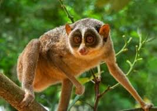
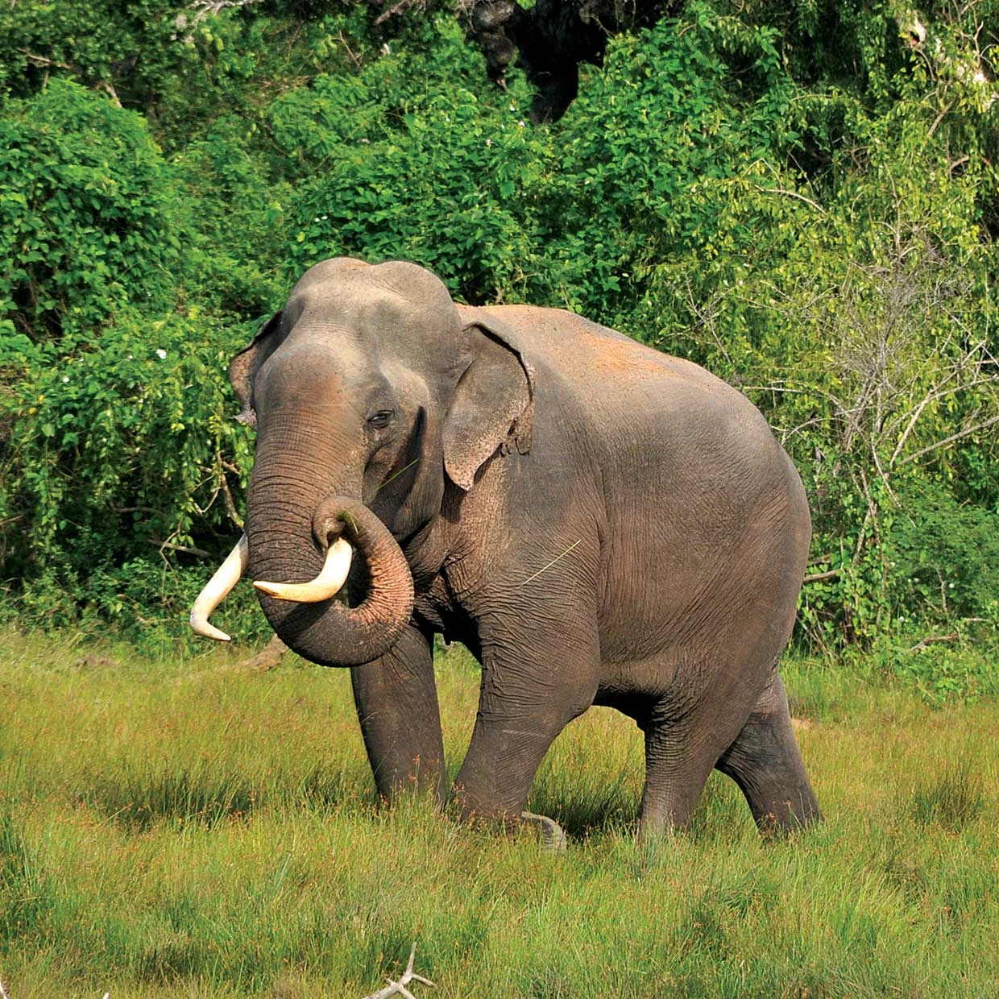

Horton Plains National Park

.png)
Welcome to the wildlife showcase highlighting various locations and species in Sri Lanka.
Horton Plains National Park is one of the smallest national parks in Sri Lanka. But, despite the size, it is one of the most amazing parks in Sri Lanka. It is also one of the very few national parks in Sri Lanka where visitors are allowed to walk. Situated in the central highlands, Horton Plains National Park has the highest altitude among all the national parks in Sri Lanka. It is 2,100–2,300 metres (6,900–7,500 ft). It belongs to Nuwara Eliya District, Central Province. And it is bordered by Sabaragamuwa and Uva provinces. Horton Plains is the headwaters of three of four major rivers in Sri Lanka, namely, Mahaweli, Kelani, Walawe. This place is very rich in bio-diversity. Numerous varieties of species can be found there and many of them are endemic not only to Sri Lanka but also to this particular Park. Other than the breathtaking beauty, it is another main reason why this park is a major tourist attraction. The Park is also called ‘Maha Eliya Plains’ (මහ එලිය තැන්න).
| Animal Name | Interesting Facts | Image |
|---|---|---|
| Sambar Deer | The Sambar deer, with its dark coat and impressive antlers, excels in swimming, holds cultural significance in Hindu mythology. |  |
| Wild Boar | The wild boar, Sus scrofa cristatus, in Sri Lanka, is known for its adaptability, intelligence, and distinctive appearance with tusks. | |
| Sri Lanka Super fowl | Sri Lanka's Junglefowl is the national bird, a colorful species endemic to the island, symbolizing cultural significance and vibrant biodiversity. |  |
| Red Slender Loris | The Red Slender Loris, found in Sri Lanka, is a nocturnal primate with large eyes, slow movement, and a unique conservation status. |  |


SINHARAJA RAIN FOREST is a world heritage and bio diversity hotspot which is also a major eco tourism destination in Sri Lanka. It is one of the few virgin forests left in the world. This evergreen rain forest, a UNESCO World heritage site, is one of the few virgin rain forests left to date. Damp mysterious and teeming with life, the Sinharaja forest reserve situated 120 KM South East of Colombo, is the last expensive stretch of virgin rainforest on the island. At just over 11000 hectares, line across the wet zone the Southern edge of the hill country, Sinharaja is an ecological treasure trove. It is staggering array of flora and fauna place it among the top bio diversity hotspot in the world. Sinharaja Forest Reserve - A UNESCO world heritage site - encompasses the largest single swath of remaining low land tropical rain forest in the country. Over 130 birds, species are found here including many of the 33 species endemic to the Sri Lanka. There also rich reptile population and myriads of insects species, many yet to be classified. Mammals scenes here including the purple faced langur monkey and the giant squirrel. Sinharaja is also home to the elusive leopard.Sinharaja is noted for its birdlife, much of which is endemic including four eagles: mountain hawk, black, cresented serpent and rufous-bellied eagle. It is preferable to explore Sinharaja on foot, which makes for the truly authentic jungle experience. Best starting point for visits are Deniyaya Mederipitiya to the East or Kudawa to the North.
| Animal Name | Interesting Facts | Image |
|---|---|---|
| Mountain Hawk Eagle | The Mountain Hawk-Eagle in Sri Lanka commands the highlands with its regal presence, showcasing exquisite plumage and predatory prowess against the stunning backdrop of lush greenery. | |
| Black Eagle | The black eagle soars majestically in Sri Lanka's skies, symbolizing strength and freedom, a breathtaking sight in nature's tapestry. | .jpeg) |
| Crested Serpent Eagle | In Sri Lanka, the Crested Serpent Eagle mesmerizes with its fierce gaze and distinctive crest, embodying nature's artistry and predatory prowess amid the island's diverse ecosystems. | .jpeg) |
| Rufous-bellied Eagle | The Rufous-bellied Eagle in Sri Lanka graces the skies with its striking plumage and formidable presence, a testament to the island's rich avian diversity and natural splendor. | |
| Sri Lanka Super fowl | Sri Lanka's Junglefowl is the national bird, a colorful species endemic to the island, symbolizing cultural significance and vibrant biodiversity. | .jpeg) |
| Purple-faced Langur | The Purple-faced Langur in Sri Lanka captivates with its vibrant fur and expressive eyes, symbolizing the island's rich biodiversity and the need for conservation efforts to preserve its habitats. |  |
| Gaint Squirrel | The Giant Squirrel in Sri Lanka, with its lush fur and bushy tail, adds charm to the island's forests, reflecting the nation's commitment to preserving its unique wildlife. |  |
| Sri Lankan Leapord | The Sri Lankan Leopard, a majestic big cat, roams the island's wilderness, embodying the untamed beauty of its habitats and highlighting the importance of conservation efforts for this endangered species. | .jpeg) |


Spanning a landmass of 8,000 hectares, and a major contributor to the area’s biodiversity due to the presence of the Minneriya Tank, the Minneriya National Park is a treasure trove of endemic flora and fauna. Although known to be a wildlife reserve, the park has quite a rich history that goes back to the 3rd century, during the reign of King Mahasen. This is because of the Minneriya Tank, as it was originally built to irrigate the lands to cultivate paddy, however, it now serves as a major source for the wildlife that dwells in the area. According to the Wildlife Conservation Department, there are 24 species of mammals, 160 species of birds, 9 species of amphibians, 25 species of reptiles, 26 species of fish, and 75 species of butterflies that take refuge in the greenery of the reserve.
| Animal Name | Interesting Facts | Image |
|---|---|---|
| Srilankan Elephant | he Sri Lankan Elephant, an iconic species, roams freely in the island's landscapes, symbolizing resilience and the urgent need for conservation to protect these majestic creatures and their habitats. |  |
| Axis Deer | The Axis Deer in Sri Lanka graces its landscapes, enhancing the natural beauty with elegance. A symbol of biodiversity, their presence highlights the delicate balance of ecosystems needing preservation. | |
| sloth bear | Sri Lanka's Sloth Bear, a charismatic presence in its forests, represents the island's rich wildlife. Conservation is vital to ensure the survival of this unique species and its habitat. | |
| Sri Lankan Leapord | The Sri Lankan Leopard, a majestic big cat, roams the island's wilderness, embodying the untamed beauty of its habitats and highlighting the importance of conservation efforts for this endangered species. | |
| Sri Lanka Super fowl | The Sri Lankan Junglefowl, a colorful and vibrant bird native to the island, symbolizes the nation's biodiversity and holds cultural significance as the country's national bird. | |
| Gray Slender Loris | Asian elephants roam freely in the wild | .jpeg) |
| Toque Macaque | The Toque Macaque, endemic to Sri Lanka, captivates with its distinctive fur and social behaviors. Conservation efforts are crucial to safeguarding this charismatic primate and its natural habitat. | .jpeg) |
| Sri lanka Grey Hornbill | The Sri Lanka Grey Hornbill, with its unique appearance and distinctive call, adds charm to the island's forests, highlighting the importance of preserving its habitats and biodiversity. |